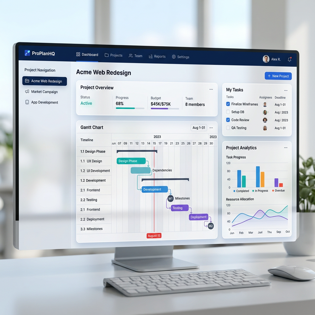
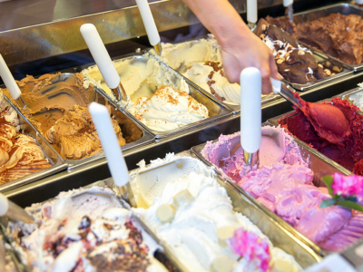

Página web diseñada para facilitar la planeación y el
seguimiento de metas, utilizando
tecnologías modernas para ofrecer una experiencia fluida y visualmente atractiva.
Características principales:
- Motor de Optimización Lineal: Implementación de modelos
matemáticos complejos mediante PuLP y SciPy para la minimización de costos operativos y
balanceo de inventarios.
- Simulación de Operaciones por Estaciones: Análisis dinámico
de flujo de procesos para identificar unidades producidas, niveles de utilización y tiempos
de espera (queuing theory).
- Arquitectura Backend de Alto Rendimiento: Desarrollo de una
API robusta con FastAPI para el procesamiento eficiente de parámetros de manufactura y
lógica de negocio.
- Visualización de Datos Estratégicos: Interfaz interactiva
para la edición de demanda y generación de dashboards con métricas clave de desempeño (KPIs)
y gráficos de análisis.
React.js
Node.js
MongoDB
Firebase
Plataforma fullstack para gestionar inventarios y pedidos en
puntos de venta universitarios,
con React.js, Node.js, MongoDB, Tailwind CSS, Firebase y Socket.io.
El proyecto tiene como objetivo mejorar la experiencia de compra
y la eficiencia
operativa en los puntos de venta de alimentos y bebidas de una universidad.
La solución permite a los usuarios consultar en tiempo real la disponibilidad de
productos, sus precios y tiempos de espera aproximados, eliminando las filas y
aumentando la satisfacción de los clientes.
Características principales:
- Autenticación segura con JWT y cifrado de contraseñas con bcrypt
- Arquitectura fullstack moderna con React.js and Node.js
- Diseño responsivo y accesible con Tailwind CSS
- Sincronización en tiempo real con Socket.io
- Sistema de notificaciones con Firebase
Simulación
Arena
Análisis Estadístico
Proyecto de simulación de eventos discretos para una
heladería,
realizado en Arena con análisis estadístico, validación y
optimización de recursos.

Este proyecto tiene como objetivo analizar y
optimizar el funcionamiento de la heladería Crepes & Waffles ubicada en el centro
comercial Centro Chía, utilizando un modelo de simulación de eventos discretos.
A través de la metodología propuesta por Robinson y validaciones estadísticas
como ANOVA y Tukey HSD, se construyó un modelo conceptual y se implementó en Arena.
Aspectos destacados:
- Análisis de colas, tiempos de espera y utilización de
recursos
- Identificación de cuellos de botella
- Propuestas de mejora en asignación de personal
- Evaluación de políticas para mejorar la experiencia del
cliente
El proyecto se centra en identificar y mejorar los procesos clave
de la empresa
con el objetivo de maximizar la eficiencia operativa, reducir costos y aumentar la
productividad. Mediante un análisis exhaustivo de
las operaciones internas, se detectaron oportunidades de mejora en áreas críticas.
Aspectos destacados:
- Análisis de variables como costos de producción, almacenamiento y
transporte
- Desarrollo de un modelo de programación lineal para minimizar
costos
- Optimización del uso de recursos y cumplimiento de la demanda
- Implementación de un sistema de toma de decisiones basado en
datos